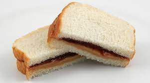

Home
Peanut Butter and Jelly Recipe

This recipe will show you how to make a classic peanut butter and jelly sandwich that is perfect for a quick and easy lunch or snack.
Ingredients
- 2 slices of bread (white or wheat)
- 1-2 tablespoons of peanut butter
- 1-2 tablespoons of jelly (grape, strawberry, or raspberry)
Steps
- Toast the bread (optional): If you prefer your sandwich to be toasted, place the bread slices in a toaster and toast until golden brown.
- Spread the peanut butter: Once the bread is toasted (if desired), spread 1-2 tablespoons of peanut butter on one slice of the bread. You can use creamy or crunchy peanut butter, depending on your preference.
- Add the jelly: Next, spread 1-2 tablespoons of jelly on the other slice of bread. You can use grape, strawberry, raspberry, or any other flavor you like.
- Put the sandwich together: Place the two slices of bread together, with the peanut butter and jelly sides facing each other.
- Cut and serve: If desired, you can cut the sandwich in half or into smaller pieces. Serve and enjoy!
enjoy your recipe